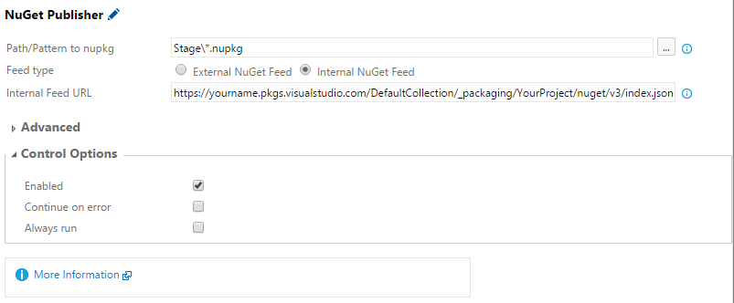

I think most of us are familiar with what NuGet is, and how it can be used to add packages from the official NuGet feed to our projects. We can all agree on that It is a real convenient way of sharing code.
What is strange is that I seldom find projects that use NuGet to share code within the project. Other more ad-hoc solutions are used instead. Have you ever opened a solution in Visual Studio to find that one of the projects that is listed in the solution is also included in an other solution? If you have, you might also have suffered from:
- Missing dependent projects: If adding a project as a reference to another in one solution it is easy to forget adding the referenced project to all solutions where it is now needed.
- Long relative paths which include the branch or repository name: This the just awful! No, I do not make this up. I have seen it happen more than once… Your project will no longer be able to build or use any branch strategy.
- NuGet packages which will not restore on build: NuGet packages are restored to the packages folder. By default this folder is located where the solution file is. If a project has references to DLLs in a packages folder different than the packages folder of your current solution, you will not be able to build if you have to triggered a NuGet restore on that other solution beforehand.
Another (bad) solution to the problem of sharing code is to simply copy it to all locations where one needs it. This might seem easy, but it makes it very hard to manage future updates to the shared code.
My observation is that many, if not all, developers consume NuGet feeds (at least the official one), but surprisingly few produce their own.
Why You Should Share Code With Your Own NuGet Feeds
There are many reasons for not publishing packages directly to the official NuGet feed.
- If you do not like your packages to be public, obviously.
- It does not make sense to publish packages from your CI builds.
- If you publish packages that does not work, you will get bad-will from people that get an opportunity to use them.
- Once packages are published in the official feed, they cannot be deleted. To correct a mistake in a published package you have to publish a new one with a higher version instead.
A better solution is to use your own NuGet feed, where you have more control over which packages exist and who that can access them. Perhaps it does not even make sense to make a package available to everyone. But if it does, it is a good idea to only push it to the official NuGet feed once the package has been verified in your own feed first.
Feed Hosting Alternatives
There are many ways you can host a NuGet feed. You should use the one that seems like the best depending on your project needs.
NuGet supports two types of security. To prevent anyone from pushing packages to your feed you can set an API key, which is a simple password that will be required to provide in the push command. To prevent anyone from consuming your feed, NuGet relies on authentication. For the most part basic authentication is used, although single-sign on with active directory is also possible.
Of course, if you really want to, you can customize NuGet to also use authentication for pushing packages. For example, this would be the case if you only want users belonging to a special group to be able to contribute to a feed.
On Premise - File Share
A fast and easy way to get started is to simply put the packages in a folder which is shared within your project. NuGet calls this a Local Feed.
Good:
- Everyone knows how to put files in a folder.
Bad:
- File shares are typically not suited for public distribution.
- If you use Visual Studio Team Services (VSTS), you have to configure an on premise build agent for access to the file share during builds.
- File shares are cumbersome for employees to access when they are not at the office.
- No download statistics.
Make care that no firewall rules prevent you or the build server from accessing the file share.
On Premise - ASP.NET Web Application
An alternative to using file shares for on premise hosting is to use an ASP.NET web application. If you need any special access policies or special requirements regarding handling of packages, this is the way to go.
NuGet calls this a Remote Feed, but can just as well be used internally. See the NuGet docs for how to create the ASP.NET Web Application.
Good:
- If put on a computer with a public IP, the feed can be used for public distribution.
- Fully customizable handling of NuGet packages.
Bad:
- If the web application cannot be reached through internet, then it is cumbersome for employees to access it when they are not at the office.
- If it is desired to secure online access, some authentication work needs to be put in to secure the feed.
- No built in download statistics.
To access a NuGet feed in VSTS, you need to configure a generic endpoint with the url of the application and the API key as the password. To get a build to publish packages to the feed, use the NuGet Publisher task and select the generic endpoint.
If you use authentication, you need to put in the username and password into NuGet. To my knowledge, this is not supported yet by the built in NuGet tasks of VSTS. I have made a demo of how it could be done in my VSO Agent Tasks repository on GitHub. Look for NuGet Publisher With Credentials.
My guess is that Microsoft will eventually provide a special type of NuGet endpoint for this type of scenario.
Azure Free Webbapp - ASP.NET Web Application
Instead of putting the web application on premise, you can put it as a web application on Azure. Free web apps comes with up to 1GB of storage.
The procedure to publish an ASP.NET web application to Azure is straightforward. Make sure you have selected Azure publishing when you create the web application project, then simply right click the project and select publish.
Good:
- Can be used for public distribution.
- Fully customizable handling of NuGet packages.
Bad:
- If desired, authentication work is needed for security.
- No built in download statistics.
MyGet
MyGet offers an advanced service for NuGet feed hosting. Their free alternative gives 500 MB of storage for public feeds protected by one or many API keys. For a minor fee, you will get 1GB of storage and the possibility to secure your feeds with authentication.
Good:
- Can be used for public distribution.
- Advanced features like feed aggregation, feed synchronization, web hooks, policies for automatic deletion of old packages, etc.
Bad:
- It will cost you some dollars each month to have a private feed.
MyGet feeds are accessed in VSTS with generic endpoints just like the ASP.NET web application.
MyGet supports a special way to add packages to a feed. By connecting a feed to a VSTS build, MyGet can search for any NuGet packages in the build artifacts and add the ones it find to your feed. This can be a convenient way to push packages to a private feed since you do not need to handle NuGet authentication credentials.
To add NuGet packages to the build artifacts in VSTS, use the built in Publish Build Artifacts task.
VSTS Package Feeds
Microsoft has just recently added a preview feature to VSTS called Package Management. It is free and offers unlimited storage. (Well? I have not found any listed storage quotas in their documentation. I assume its unlimited since they have not got any storage quota for source code.)
Because of the authentication model around VSTS, only private feeds are available.
Good:
- Free private feeds
Bad:
- No way to delete published packages. Yet anyway.
To get started, find Package Management in the Visual Studio Marketplace and click install.
A few days ago, Microsoft patched the NuGet Publisher task to support internal NuGet feeds. When VSTS is updated next time (my guess is that it will be in the middle of december) all accounts will get the updated version, but if you do not want to wait you can update it yourself.
This is how the task should look like:

Microsoft recommends that you consume VSTS package feeds in Visual Studio 2015 Update 1. Since that version is not released yet? you can either use the release candidate, or use the workflow for older clients which describes how to add the credentials to your local NuGet package sources.